실제 브랜드 디테일 사진
실제 제품 사진을 기준으로 구조를 관찰하는 레퍼런스. 사진을 클릭하거나 출처 링크를 눌러 원본 제품 페이지를 확인하세요.
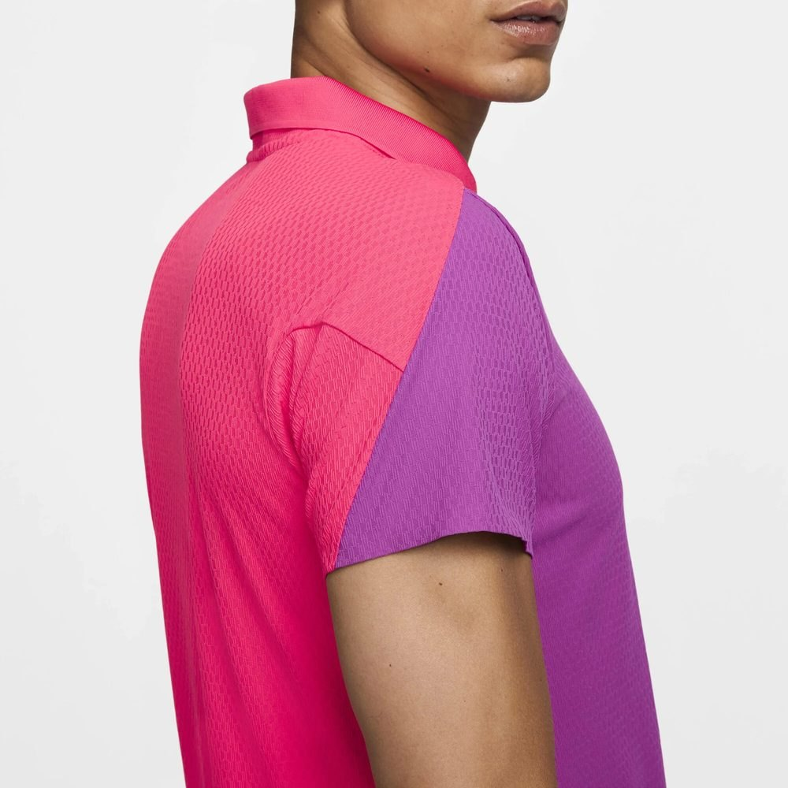
Shoulder / sleeve knit panel
소매와 어깨를 감싸는 패널 경계 및 니트 표면. 사진만으로 거싯 구조를 단정하지 않음.
제품 출처 ↗
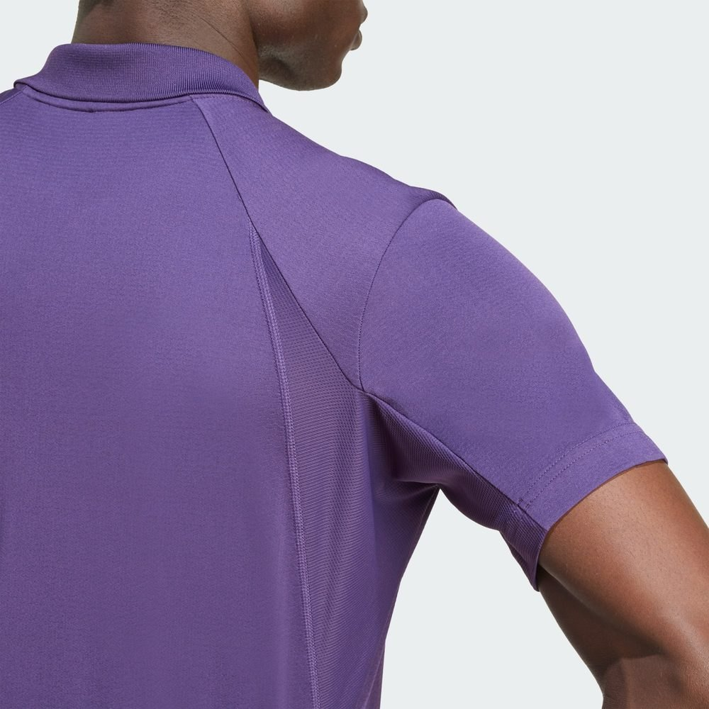
Back / shoulder seam & gusset reference
등판-소매 연결부와 어깨 절개선. 제품 설명상 FreeLift 설계.
제품 출처 ↗
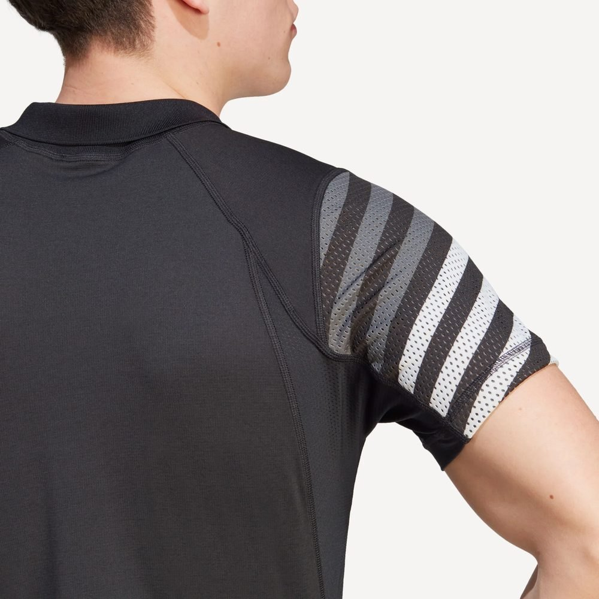
Raglan / perforated sleeve
래글런 형태의 소매 연결과 소매 메쉬/타공 디테일.
제품 출처 ↗
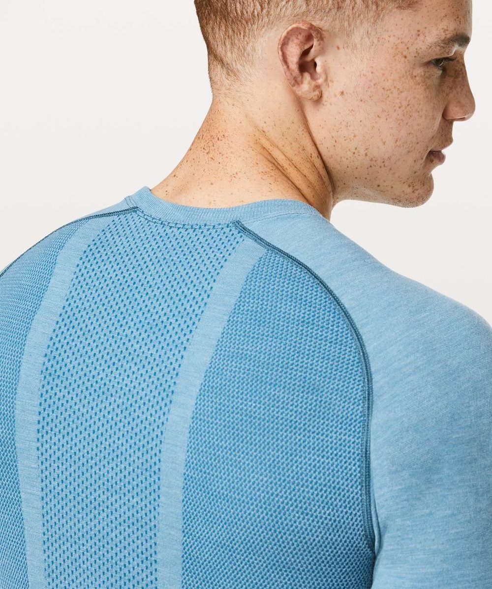
Engineered mesh / back ventilation
등판 중앙의 메쉬 조직 구역과 어깨 주변 패널.
제품 출처 ↗
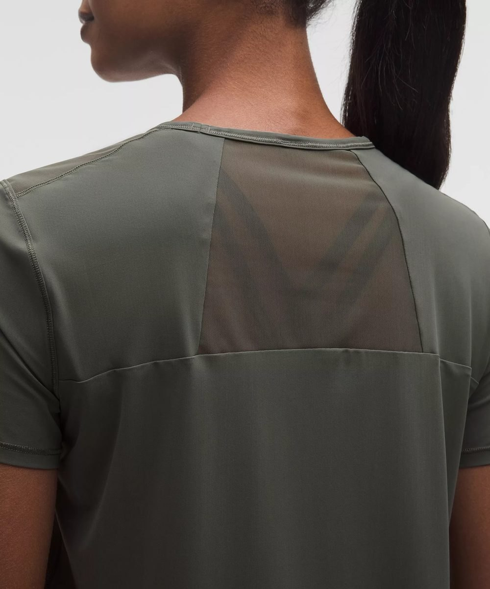
Back mesh insert
등판 중앙 메쉬 인서트와 상단 요크 형태.
제품 출처 ↗
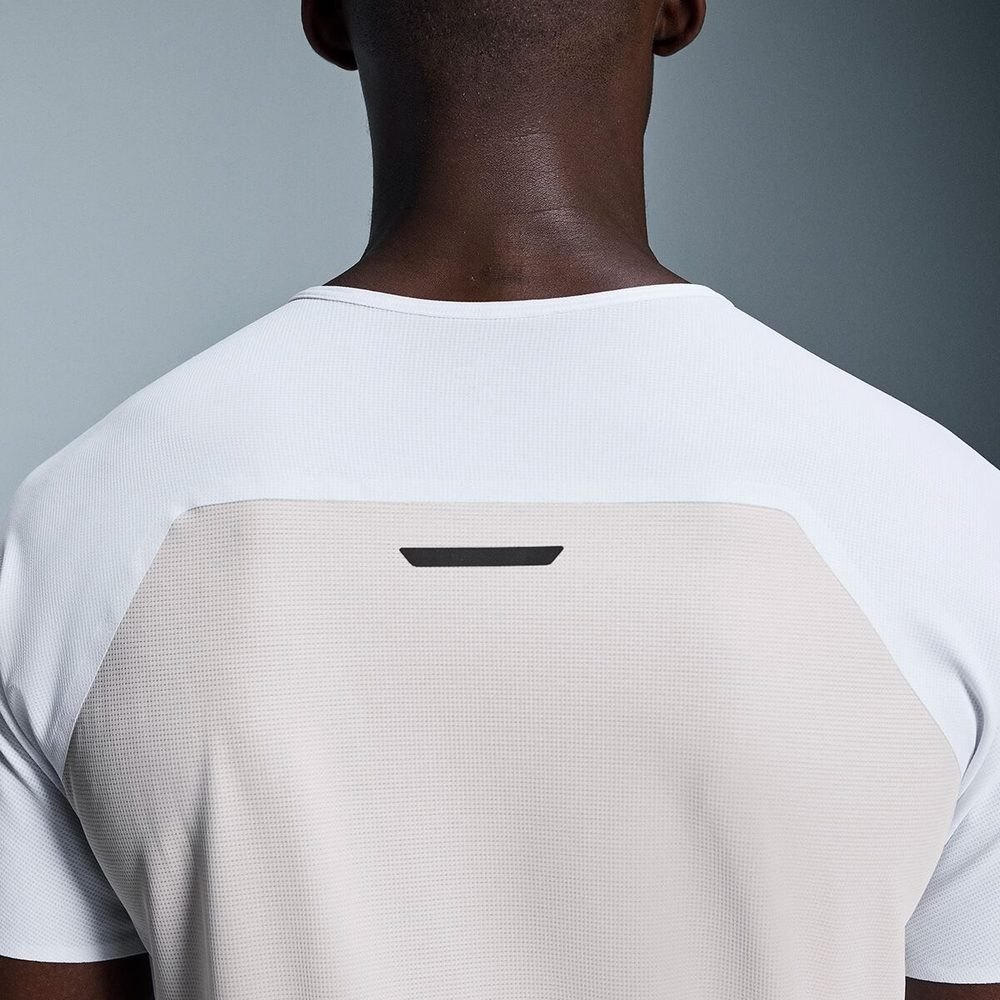
Upper-back ventilation panel
등 상부의 넓은 메쉬 패널. 해당 사진은 브랜드 공식몰이 아닌 판매처 이미지.
제품 출처 ↗
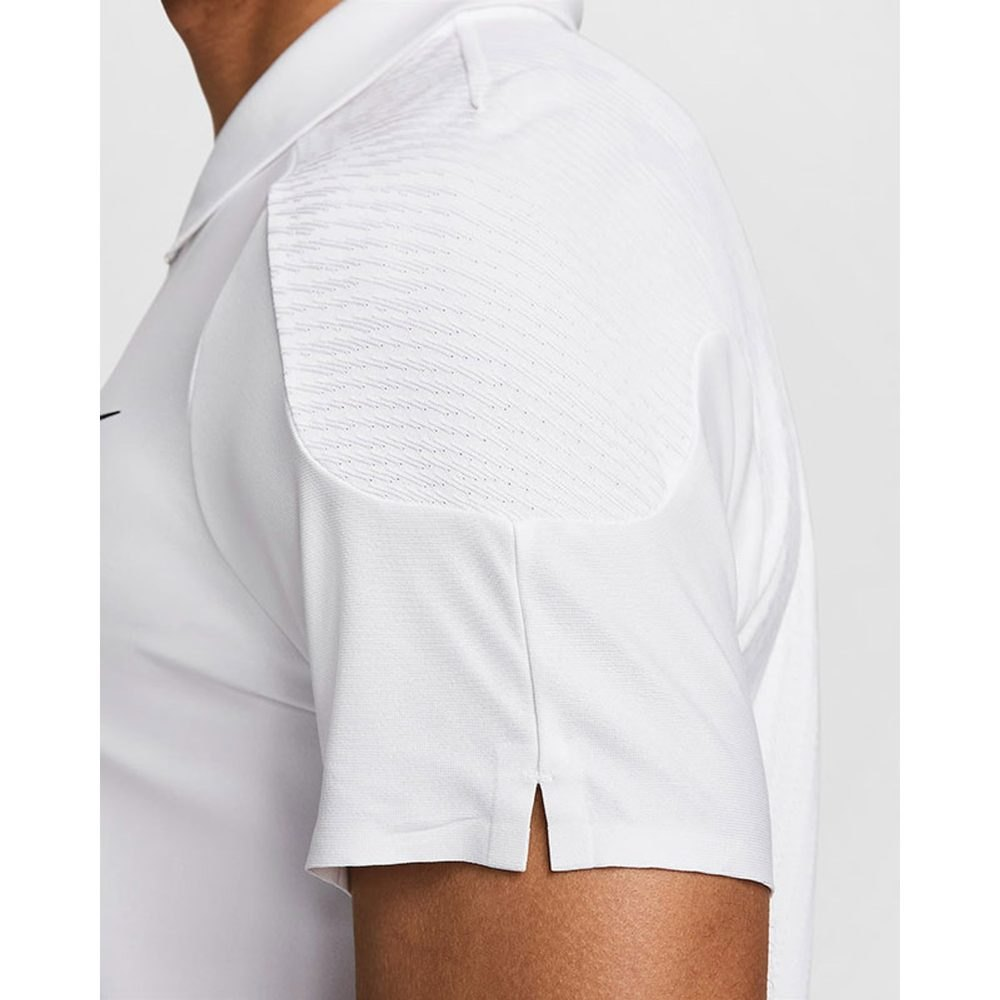
Shoulder texture / sleeve hem detail
어깨의 조직감 있는 패널과 소매 끝 슬릿.
제품 출처 ↗
01 / 29 · 움직임·인체공학
Underarm Gusset
겨드랑이 무
팔을 올리거나 회전할 때 겨드랑이 부위에 움직임 여유를 제공하는 삽입 패널.
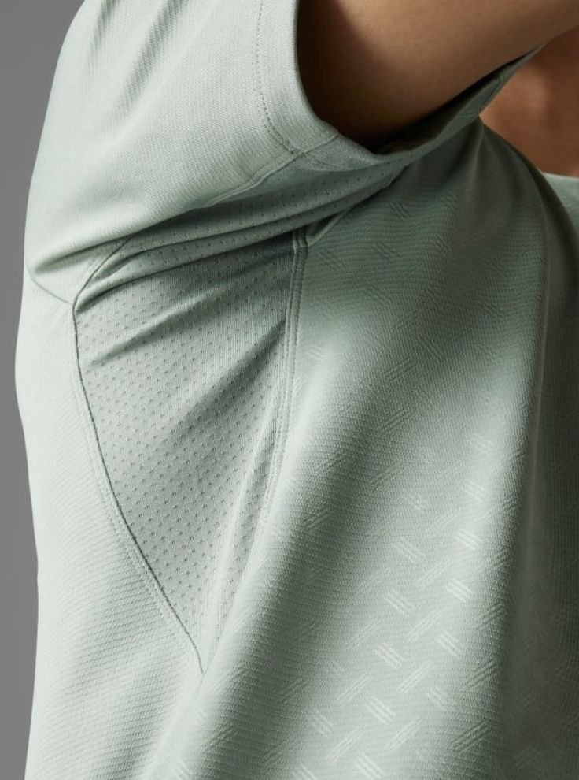
제품/원문 출처 ↗
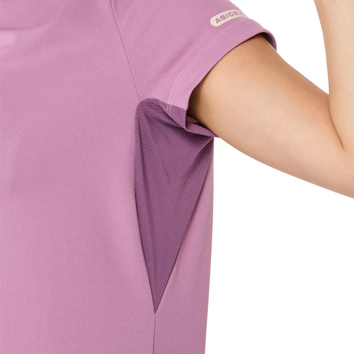
종류
Diamond Gusset, Triangle Gusset, Curved Gusset, Integrated Gusset
추가했을 때 기대 효과
암홀·겨드랑이에 집중되는 당김과 몸판 끌림을 줄일 가능성이 있다. 효과는 무의 형태, 치수, 봉제선 위치, 소재 신축성에 따라 달라진다.
적용 제품
T-shirt, Polo, Training Top
Pro Pack 검증 포인트
테니스 서브 중 팔 거상·어깨 회전. 팔을 올린 상태에서 겨드랑이 압박, 밑단 상승, 주름 위치를 비교.
02 / 29 · 소매·암홀 구조
Raglan Sleeve
래글런 소매
소매 절개선이 목둘레 또는 넥 부근에서 겨드랑이 방향으로 이어지는 소매 구조.
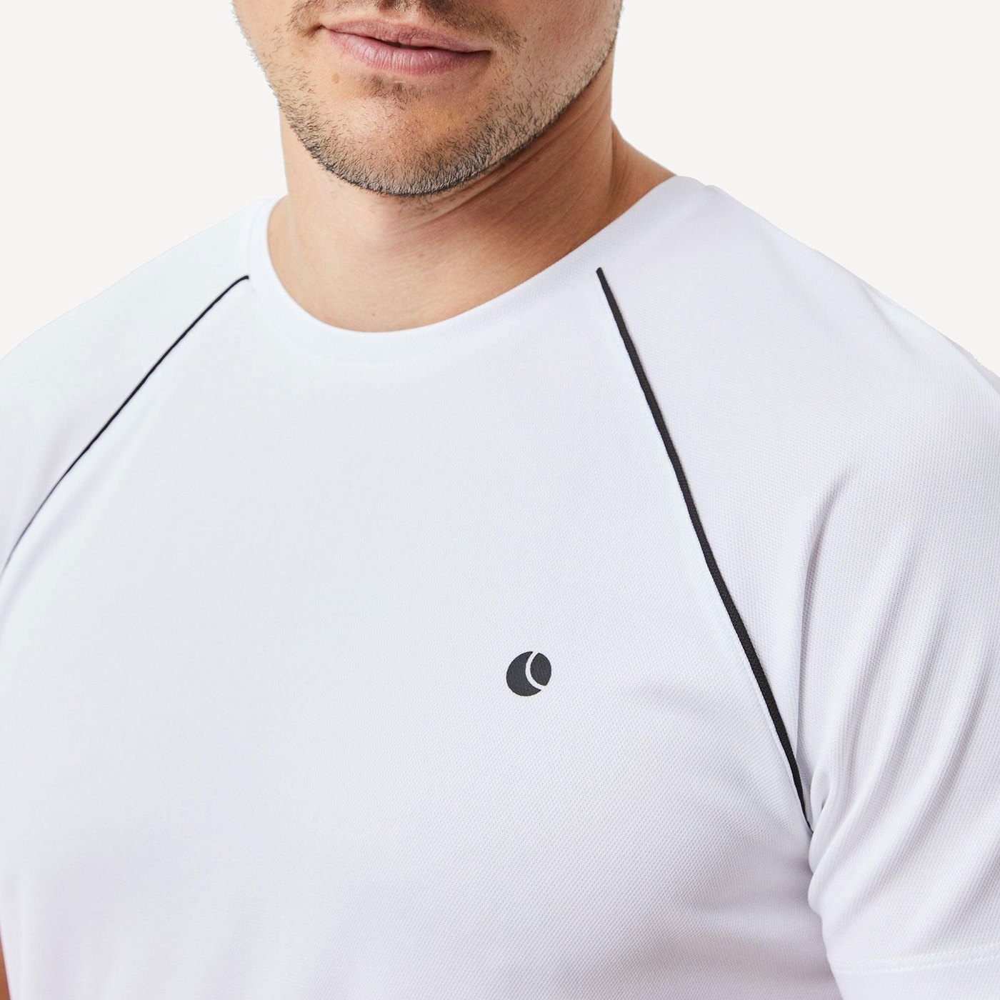
제품/원문 출처 ↗
종류
Full Raglan, Half Raglan, Modified Raglan, Saddle Raglan
추가했을 때 기대 효과
어깨 절개선의 위치와 암홀 형상을 바꿔 팔 움직임에 대한 패턴 밸런스를 조정할 수 있다. 래글런 자체가 자동으로 더 큰 가동성을 보장하지는 않는다.
적용 제품
Tennis T-shirt, Polo, Training Top
Pro Pack 검증 포인트
팔을 머리 위로 올릴 때 목·어깨·겨드랑이 당김과 몸판 동반 상승을 평가.
03 / 29 · 움직임·인체공학
Articulated Sleeve
입체 소매
팔꿈치의 자연스러운 굴곡이나 팔의 자세를 고려해 소매에 입체 형상을 부여하는 구조.
종류
Pre-shaped Sleeve, Two-piece Sleeve, Elbow Dart, Elbow Pleat
추가했을 때 기대 효과
팔꿈치 굴곡 시 원단의 과도한 당김과 불필요한 주름을 조절할 수 있다. 주로 팔꿈치 굴곡이 큰 제품에서 효과를 검증한다.
적용 제품
Long-sleeve tennis top, Training jacket
Pro Pack 검증 포인트
팔꿈치 굴곡·신전과 라켓 준비 자세에서 소매의 비틀림, 당김, 여유량 확인.
04 / 29 · 움직임·인체공학
Action Panel
액션 패널
움직임이 큰 부위에 별도 패널을 배치해 소재·방향·패턴 여유를 구역별로 설계하는 방식.
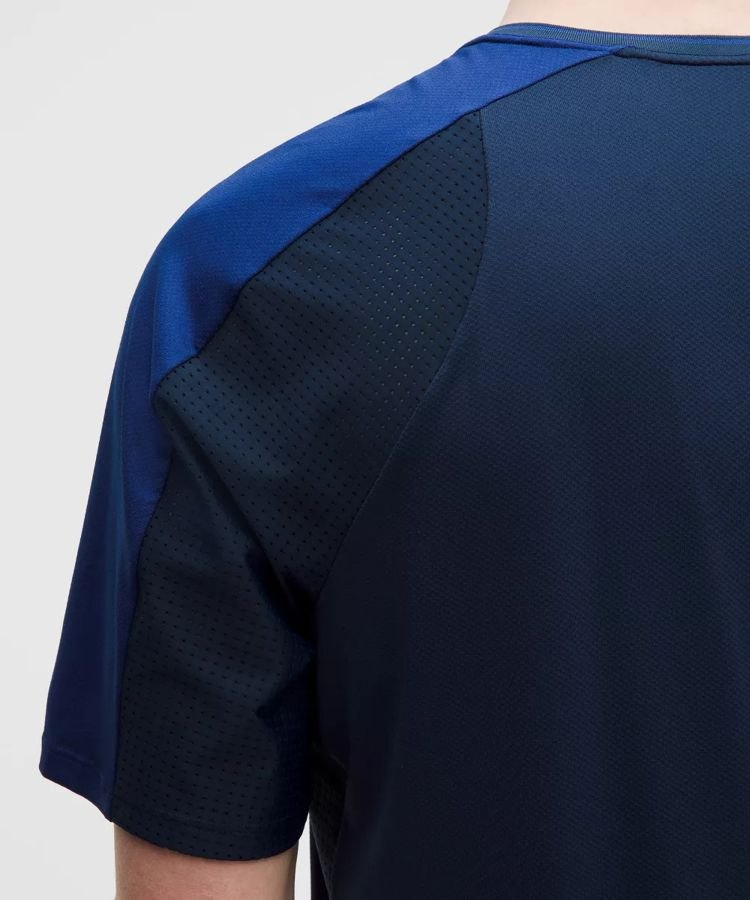
제품/원문 출처 ↗
종류
Underarm Action Panel, Side Action Panel, Back Action Panel
추가했을 때 기대 효과
부위별 신축성, 소재 두께, 패널 방향을 다르게 설계할 수 있다. 패널 추가만으로 운동성이 좋아지는 것은 아니며 패널 경계의 봉제선도 평가해야 한다.
적용 제품
Performance T-shirt, Polo, Training wear
Pro Pack 검증 포인트
서브 반복 후 패널 경계 압박, 원단 변형, 솔기 위치와 피부 마찰을 확인.
05 / 29 · 움직임·인체공학
Action Pleat
액션 플리츠
움직임에 따라 접힌 분량이 열리며 일시적인 여유를 제공하는 주름 구조.
종류
Box Pleat, Inverted Pleat, Knife Pleat, Bi-swing Pleat
추가했을 때 기대 효과
팔·견갑골·등의 움직임에 필요한 추가 분량을 제공할 수 있다. 주름이 완전히 열리는지, 복원되는지, 외관이 부풀지 않는지 확인해야 한다.
적용 제품
Back yoke, upper back, shoulder area
Pro Pack 검증 포인트
팔을 앞으로 뻗거나 올릴 때 주름 개폐량과 복원, 원단 뭉침을 비교.
06 / 29 · 소매·암홀 구조
Set-in Sleeve
셋인 소매
몸판의 암홀에 소매산을 봉제하는 기본 소매 구조.
종류
Standard Set-in, Low-cap, High-cap, Forward-pitched sleeve
추가했을 때 기대 효과
어깨선과 소매산 형태를 정교하게 제어할 수 있다. 암홀 높이, 소매산 높이, 소매 각도 및 여유량의 조합이 가동성과 실루엣을 좌우한다.
적용 제품
Tennis Polo, Performance T-shirt
Pro Pack 검증 포인트
팔을 옆·앞·위로 움직이며 암홀 압박, 몸판 상승, 소매 당김을 확인.
07 / 29 · 소매·암홀 구조
Drop Shoulder
드롭 숄더
어깨점보다 바깥쪽으로 어깨선을 이동한 구조.
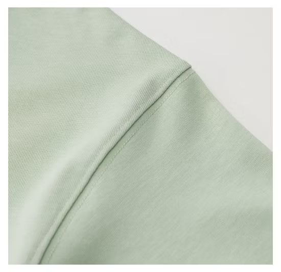
제품/원문 출처 ↗
종류
Slight Drop, Deep Drop
추가했을 때 기대 효과
여유롭고 캐주얼한 실루엣을 만들 수 있다. 암홀이 낮아지면 팔을 들 때 몸판이 함께 올라갈 수 있으므로 운동성 개선 디테일로 단정하지 않는다.
적용 제품
Lifestyle sportswear, relaxed T-shirt
Pro Pack 검증 포인트
팔 거상 시 몸판 동반 상승과 겨드랑이 당김을 확인.
08 / 29 · 소매·암홀 구조
Two-piece Sleeve
투피스 소매
소매를 두 개 이상의 패널로 나누어 입체 형상과 방향을 제어하는 구조.
종류
Two-piece sleeve, curved-seam sleeve, anatomical sleeve
추가했을 때 기대 효과
소매의 회전·비틀림과 입체 형태를 조절하고 패널별 소재 배치가 가능하다. 봉제선 수와 생산 난이도는 증가한다.
적용 제품
Performance long sleeve, tennis jacket
Pro Pack 검증 포인트
라켓 그립·준비 자세·팔꿈치 굴곡에서 소매 솔기 이동과 비틀림 평가.
09 / 29 · 소매·암홀 구조
Modified Armhole
변형 암홀
암홀 깊이·곡선·위치·전후 밸런스를 동작 목적에 맞게 조정하는 패턴 수정.
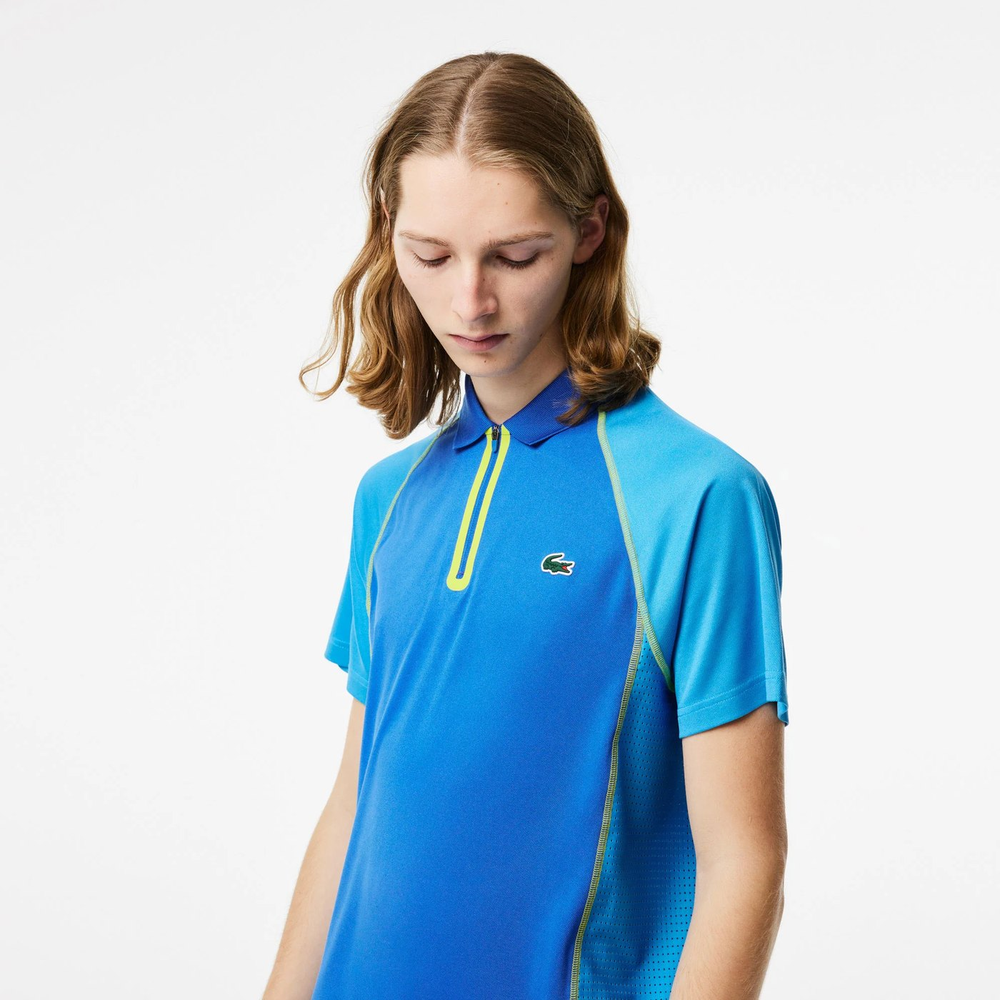
Back view shows raglan-style sleeve and side panel junction; armhole geometry must be confirmed from pattern.
제품/원문 출처 ↗
종류
High Armhole, Shallow Armhole, Forward-shifted Armhole, Re-shaped Armhole
추가했을 때 기대 효과
암홀과 소매의 관계를 조정해 팔을 뻗거나 들 때 압박 및 몸판 끌림을 관리할 수 있다. 지나치게 높거나 좁으면 오히려 압박이 생길 수 있다.
적용 제품
Tennis Polo, athletic T-shirt
Pro Pack 검증 포인트
팔 거상·전방 도달·어깨 회전에서 암홀 가장자리 압박과 가동 범위를 평가.
10 / 29 · 패널·절개 구조
Multi-panel Construction
멀티 패널 구성
몸판을 여러 패널로 분할해 각 구역의 형태·소재·방향을 독립적으로 설계하는 방식.
종류
Side Panel, Back Panel, Yoke Panel, Curved Panel
추가했을 때 기대 효과
부위별 소재 물성, 패턴 분량, 통기 구역을 세밀하게 배치할 수 있다. 패널 경계가 늘면 봉제선 마찰과 생산 복잡도가 증가할 수 있다.
적용 제품
Tennis T-shirt, Polo, performance top
Pro Pack 검증 포인트
패널 경계 위치, 솔기 압박, 신장 방향, 서브 중 변형을 확인.
11 / 29 · 패널·절개 구조
Side Panel / Side Gusset
사이드 패널 / 사이드 무
몸판 옆선을 별도 패널로 구성하는 방식. Gusset은 움직임 여유를 제공하도록 삽입되는 패널을 뜻한다.
종류
Straight, Curved, Tapered Side Panel; Side Gusset
추가했을 때 기대 효과
옆구리의 핏·신축성·통기성을 별도로 조절할 수 있다. 단순한 장식 패널과 기능성 거싯은 목적을 구분해야 한다.
적용 제품
Tennis T-shirt, running top
Pro Pack 검증 포인트
몸통 회전·측면 굴곡에서 옆선 당김, 비틀림, 패널 신장 확인.
12 / 29 · 패널·절개 구조
Forward Shoulder Seam
전방 이동 어깨선
어깨 봉제선을 표준 어깨선보다 앞쪽으로 이동하는 디자인·구조.
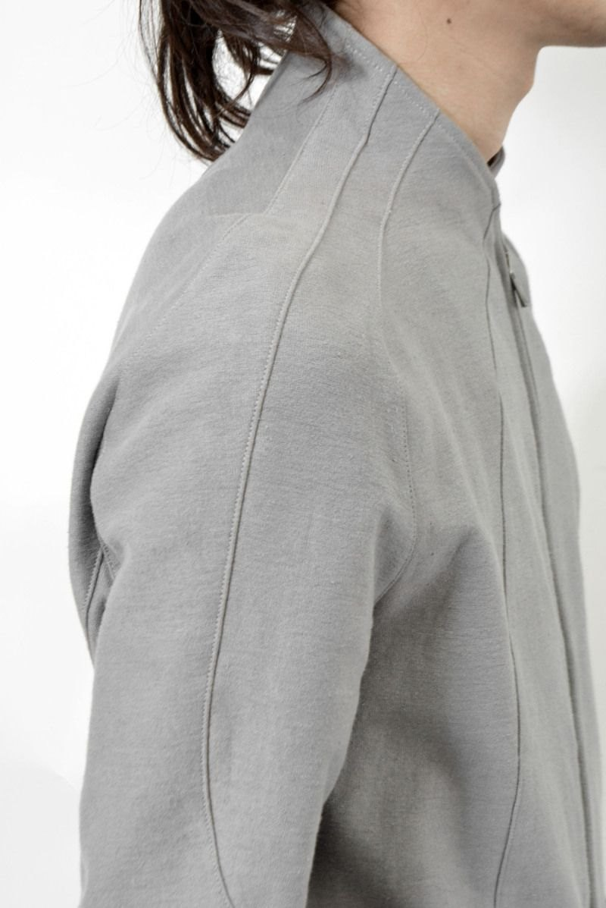
제품/원문 출처 ↗
종류
Forward Shoulder Seam, Offset Shoulder Seam
추가했을 때 기대 효과
봉제선이 어깨 위 또는 뒤쪽에서 마찰을 일으키는 위치를 피하도록 조정할 수 있다. 가동성 향상은 봉제선 이동만으로 보장되지 않는다.
적용 제품
Performance T-shirt, Polo, backpack-compatible tops
Pro Pack 검증 포인트
서브와 라켓 준비 동작에서 어깨 솔기 마찰·압박 위치를 비교.
13 / 29 · 패널·절개 구조
Ergonomic Seam Placement
인체공학적 절개선 배치
피부 마찰, 관절 움직임, 의복 변형을 고려해 절개선과 봉제선을 배치하는 설계 방식.
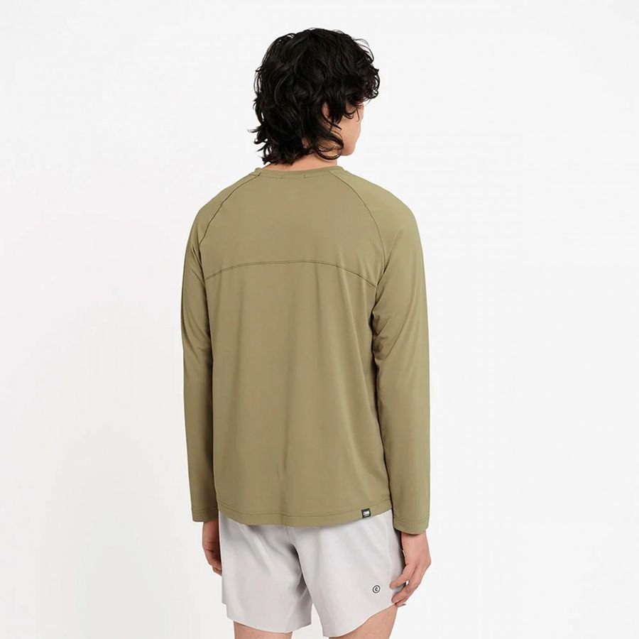
제품/원문 출처 ↗
종류
Offset Side Seam, Curved Seam, Shifted Underarm Seam
추가했을 때 기대 효과
민감 부위의 봉제선 접촉을 줄이거나 의복의 변형 경로를 조절할 수 있다. 실제 피부 접촉과 솔기 두께를 착용 테스트로 확인해야 한다.
적용 제품
Performance top, compression wear
Pro Pack 검증 포인트
서브 반복 시 피부 마찰, 솔기 압박, 봉제선 이동을 평가.
14 / 29 · 통기·열 관리
Mesh Insert
메시 인서트
통기성이 높은 메시 원단을 특정 부위에 삽입하는 구조.

종류
Underarm Mesh, Back Mesh, Side Mesh, Full Mesh Panel
추가했을 때 기대 효과
해당 구역의 공기 투과성과 열·수분 배출을 보조할 수 있다. 강도, 비침, 신축률 차이 및 봉제부 내구성을 함께 확인한다.
적용 제품
Underarm, upper back, side body
Pro Pack 검증 포인트
운동 전후 온습도·건조감·착용감, 메시와 본체의 신장 차이를 비교.
15 / 29 · 통기·열 관리
Laser Perforation
레이저 펀칭
레이저로 원단에 구멍 또는 패턴형 개구부를 만드는 가공.
종류
Micro Perforation, Patterned Perforation, Zoned Perforation
추가했을 때 기대 효과
통기 경로와 디자인을 국소적으로 만들 수 있다. 구멍 크기·간격에 따라 강도 저하, 올 풀림, 신장 집중이 발생할 수 있다.
적용 제품
Back panel, underarm, side panel
Pro Pack 검증 포인트
가공 전후 인장·파열 강도, 세탁 내구성, 통기성 비교.
16 / 29 · 통기·열 관리
Back Vent
백 벤트
등판에 개구부, 겹침 또는 메시 구조를 넣어 공기 흐름을 만드는 디테일.
종류
Overlapping Vent, Mesh Vent, Yoke Vent, Split Vent
추가했을 때 기대 효과
등판의 통기성을 높일 수 있다. 개구부가 벌어지거나 외관이 무너지지 않는지, 라켓 동작 시 걸림이 없는지 확인한다.
적용 제품
Tennis Polo, performance shirt
Pro Pack 검증 포인트
서브 중 벤트 개폐·노출·걸림과 등판 열감 평가.
17 / 29 · 통기·열 관리
Body Mapping
바디 매핑
신체 부위별 요구에 따라 소재 조직·두께·신축성·통기성을 구역화하는 설계 전략.
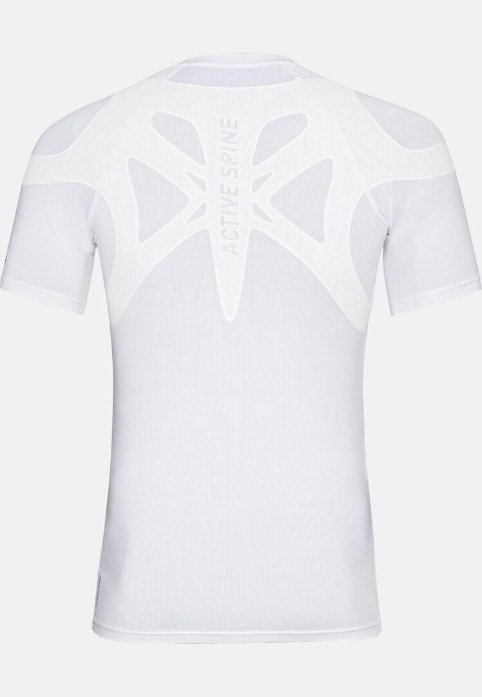
제품/원문 출처 ↗
종류
Thermal Mapping, Ventilation Mapping, Stretch Mapping, Support Mapping
추가했을 때 기대 효과
필요한 부위에 다른 소재 특성을 배치해 쾌적성·움직임·지지감을 조절할 수 있다. 단일 패턴 디테일이 아니라 소재와 패턴을 함께 설계하는 전략이다.
적용 제품
Performance T-shirt, seamless top
Pro Pack 검증 포인트
구역별 온습도, 신장, 회복률, 착용감 및 세탁 후 변화를 평가.
18 / 29 · 밑단·착용 안정성
Side Split Hem
사이드 슬릿
밑단 양옆에 트임을 만들어 밑단의 움직임을 허용하는 마감.
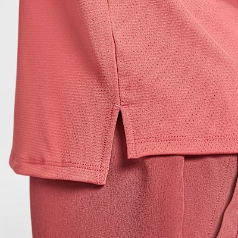
제품/원문 출처 ↗
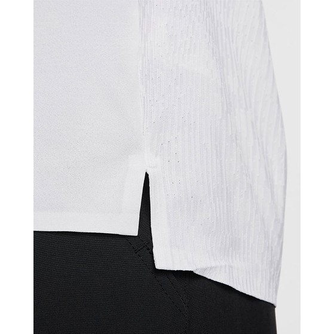
종류
Straight Split, Curved Split, Overlap Split
추가했을 때 기대 효과
골반·허리 움직임과 밑단 벌어짐에 여유를 줄 수 있다. 슬릿 길이와 보강 방식에 따라 벌어짐·찢김 위험이 달라진다.
적용 제품
Tennis Polo, T-shirt
Pro Pack 검증 포인트
몸통 회전·런지·서브 후 밑단 벌어짐과 말림을 확인.
19 / 29 · 밑단·착용 안정성
Dropped Back Hem
드롭 백 헴
뒷밑단을 앞밑단보다 길게 설계하는 형태.
종류
Curved Drop Tail, Straight Drop Tail
추가했을 때 기대 효과
숙이거나 팔을 올릴 때 뒤허리 커버리지를 유지하는 데 도움이 될 수 있다. 길이 차이가 과하면 실루엣과 움직임을 방해할 수 있다.
적용 제품
Tennis T-shirt, training top
Pro Pack 검증 포인트
서브·전방 굴곡에서 뒤 허리 노출과 밑단 위치를 확인.
20 / 29 · 밑단·착용 안정성
Silicone Gripper
실리콘 그리퍼
의복 안쪽에 실리콘 프린트 또는 그립 테이프를 적용해 미끄러짐을 줄이는 마감.
종류
Continuous Gripper, Dotted Gripper, Silicone Print
추가했을 때 기대 효과
피부 또는 이너웨어와의 마찰을 높여 밑단 위치를 유지하는 데 도움을 줄 수 있다. 피부 자극, 열감, 세탁 내구성을 검증해야 한다.
적용 제품
Fitted performance top, compression top
Pro Pack 검증 포인트
서브 반복 중 밑단 이동량, 피부 자극, 땀·세탁 후 접착력 확인.
21 / 29 · 밑단·착용 안정성
Bonded Hem
본딩 헴
접착 필름·열접착 등으로 밑단을 마감하는 방식.
종류
Adhesive Bonding, Heat Bonding, Ultrasonic Bonding
추가했을 때 기대 효과
일반 봉제 대비 두께와 봉제선 돌출을 줄일 수 있다. 접착 내구성, 신축성, 세탁·열 노화 성능이 중요하다.
적용 제품
Lightweight performance top
Pro Pack 검증 포인트
반복 신장·세탁 후 박리, 말림, 신축성 평가.
22 / 29 · 소재·표면 구조
Stretch Panel
스트레치 패널
신축성·회복 특성이 다른 소재를 별도 패널로 배치하는 구조.
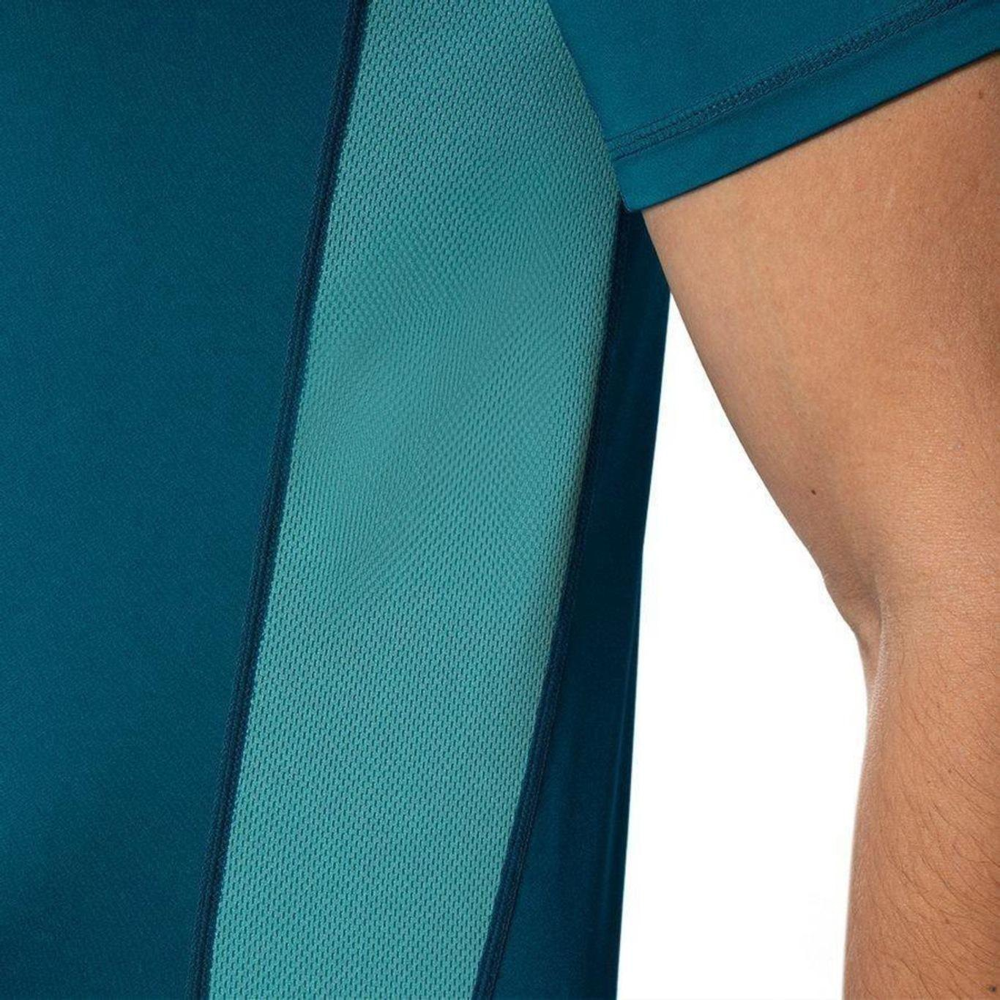
Contrast stretch/mesh panel placement; exact stretch properties depend on fabric specification.
제품/원문 출처 ↗
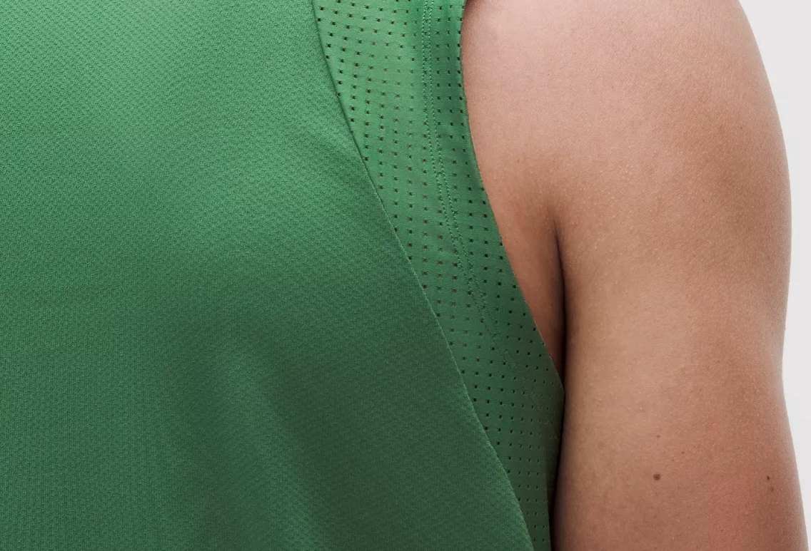
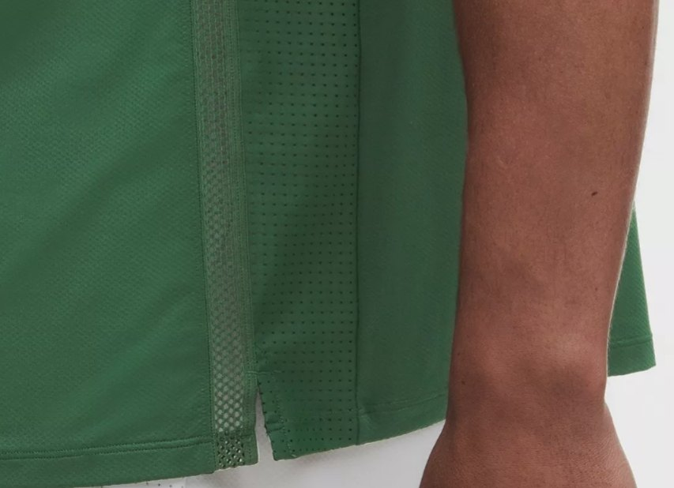
종류
2-way Stretch, 4-way Stretch, High-recovery Panel
추가했을 때 기대 효과
필요 부위의 신장과 회복 특성을 조절할 수 있다. 소재 물성 차이가 크면 패널 경계에 응력이 집중될 수 있다.
적용 제품
Underarm, back, side body, shoulder
Pro Pack 검증 포인트
가로·세로 신장률, 회복률, 솔기 강도 및 동작 중 변형 비교.
23 / 29 · 소재·표면 구조
Engineered Knit / Jacquard Zone
조직 설계 니트 / 자카드 존
편직 과정에서 위치별 조직·밀도·패턴을 다르게 설계하는 방식.
종류
Mesh Knit, Rib Knit, Textured Knit, Zoned Jacquard
추가했을 때 기대 효과
별도 패널 봉제를 최소화하면서 구역별 통기성·신축성·표면 질감을 설계할 수 있다. 편직 가능 범위와 최소 주문 조건을 확인해야 한다.
적용 제품
Performance Polo, seamless top
Pro Pack 검증 포인트
구역별 신장·회복·통기성, 편직 전환부의 내구성을 평가.
24 / 29 · 소재·표면 구조
Seamless Construction
심리스 구조
원형 편직·홀가먼트·본딩 등으로 봉제선을 줄이거나 특정 봉제선을 제거하는 제조·구성 방식.
종류
Circular Knit, Whole Garment, Bonded Construction
추가했을 때 기대 효과
봉제선 수와 접촉부를 줄여 마찰·두께를 줄일 수 있다. 'Seamless'가 모든 봉제선이 없다는 뜻은 아니며 구조별 차이를 구분해야 한다.
적용 제품
Compression wear, seamless performance top
Pro Pack 검증 포인트
접합부 내구성, 압박 분포, 착용감, 사이즈별 핏을 평가.
25 / 29 · 봉제·기능 마감
Flatlock Stitch
플랫락 봉제
원단 가장자리를 맞대거나 겹쳐 비교적 평평한 봉제선을 만드는 봉제 방식.
제품/원문 출처 ↗
종류
3-thread, 4-thread, 6-thread Flatlock (장비·실 구성에 따라 다름)
추가했을 때 기대 효과
일반적인 두꺼운 솔기보다 돌출을 줄여 피부 마찰을 완화할 수 있다. 실 장력과 봉제 폭에 따라 신축성과 내구성이 달라진다.
적용 제품
Underarm seam, side seam, shoulder seam
Pro Pack 검증 포인트
피부 접촉면, 봉제 두께, 신장 시 실 끊김·솔기 벌어짐 평가.
26 / 29 · 봉제·기능 마감
Coverstitch
커버스티치
니트 밑단·소매단 등에 사용하는 신축성 있는 커버 봉제.
제품/원문 출처 ↗
종류
2-needle, 3-needle, top-cover variants
추가했을 때 기대 효과
밑단과 소매단의 신축성을 유지하면서 가장자리를 안정적으로 마감할 수 있다.
적용 제품
T-shirt hem, sleeve hem, polo hem
Pro Pack 검증 포인트
반복 신장 후 스티치 파손, 파도 현상, 밑단 늘어남 확인.
27 / 29 · 봉제·기능 마감
Seam Taping
심 테이핑
봉제선 위 또는 안쪽에 테이프를 부착해 보강하거나 방수 처리하는 방식.
Reflective trim and seam close-up; use as a seam/trim placement reference, not proof of sealed seam tape.
제품/원문 출처 ↗
종류
Seam Sealing Tape, Reinforcement Tape, Stretch Seam Tape
추가했을 때 기대 효과
솔기 보강 또는 방수성 확보에 활용한다. 일반 테니스 티셔츠에서는 불필요한 두께·경직이 생길 수 있으므로 목적을 명확히 해야 한다.
적용 제품
Waterproof jacket, technical outerwear
Pro Pack 검증 포인트
테이프 박리, 굴곡 내구성, 신축성, 피부 접촉감 평가.
28 / 29 · 봉제·기능 마감
Reflective Piping / Print
반사 파이핑 / 프린트
빛을 반사하는 소재를 파이핑·전사·프린트로 적용하는 디테일.
제품/원문 출처 ↗
종류
Reflective Piping, Reflective Transfer, Reflective Print
추가했을 때 기대 효과
저조도 환경에서 시인성을 높일 수 있다. 주간 코트용 제품에서는 디자인 목적과 실제 사용 환경을 고려한다.
적용 제품
Running wear, outdoor training wear
Pro Pack 검증 포인트
세탁 후 반사 성능, 균열, 부착 내구성 확인.
29 / 29 · 봉제·기능 마감
Functional Placket / Collar
기능성 플라켓 / 칼라
목둘레와 앞여밈을 조절하는 칼라·플라켓 구조.
종류
Half-zip, Hidden Placket, Stand Collar, Rib Collar, Self-fabric Collar
추가했을 때 기대 효과
착탈, 목 주변 압박, 통기 및 외관을 조절할 수 있다. 칼라 높이·심지·플라켓 보강이 목 움직임과 착용감에 영향을 준다.
적용 제품
Tennis Polo, performance T-shirt
Pro Pack 검증 포인트
목 회전·굴곡 시 칼라 압박, 플라켓 들뜸, 단추·지퍼 간섭 확인.
Pro Pack 우선 검토 디테일
| 우선 검토 | 디테일 | 개발 목적 | 검증 방법 |
|---|---|---|---|
| High | Underarm Gusset | 겨드랑이 당김 및 몸판 끌림 관리 | 팔 거상, 서브 반복, strain mapping |
| High | Modified Armhole | 팔 거상·전방 도달 시 암홀 밸런스 | 어깨 ROM, 암홀 압박, hem displacement |
| High | Raglan / Modified Raglan | 어깨 절개선 및 소매 연결 구조 조정 | Set-in과 동일 소재 조건 비교 |
| High | Multi-panel Back | 등판 신장·회전과 패널 배치 | 등판 마커 변형, 솔기 압박 |
| High | Stretch Panel | 부위별 신장·회복 특성 조정 | 가로·세로 신장률, 회복률, 솔기 강도 |
| Medium | Mesh / Laser Perforation | 국소 통기성 및 열 관리 | 공기 투과성, 내구성, 세탁 후 변화 |
| Medium | Side Split / Dropped Back Hem | 밑단 움직임과 커버리지 | 서브 중 밑단 이동량 및 노출 |